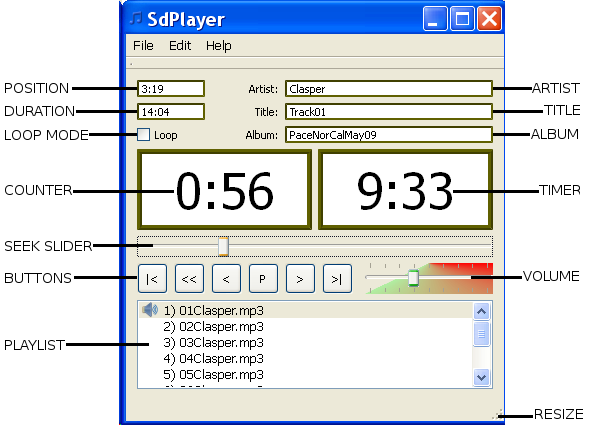
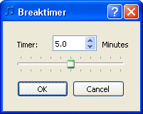
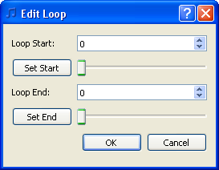
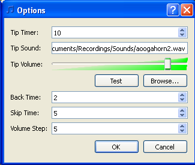
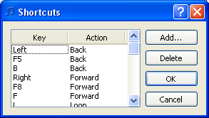
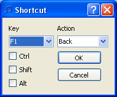

Users guide
by
Keith Rubow
SdPlayer is a music player for square dancers. It has all the features you need for running a workshop (a.k.a. "tape group"), or for playing music for calling. It is based in the open source VLC media player, so it plays just about any audio file format you can think of. Here is a summary of its major features:
To make SdPlayer run on a Windows computer it is necessary to install three different items.
Important! SdPlayer needs to have a path to the VLC libraries added to your system PATH environment variable. This is done automatically if you run the SdPlayer installer as an administrator. If you cannot run the SdPlayer installer as an administrator, you will need to add this path manually. The path to the VLC libraries is the same folder where VLC was installed, usually C:\Program Files\VideoLAN\VLC (for Windows XP) or C:\Program Files (x86)\VideoLan\VLC (for Vista, Windows 7 or Windows 8). To manually modify the Windows PATH variable, right-click on My Computer and select Properties. Open the "Advanced" tab and click the "Environment Variables" button. Under "System variables" is a list of variables. Select the "Path" variable and click the "Edit" button. Then add the path to your VLC program to the end of the list of paths listed under "Variable value". Be sure to separate the newly added path from the other paths with a semicolon (";") character. For example, add your path to the existing paths as follows (new path highlighted in red):
Was:
%SystemRoot%\system32;%SystemRoot%;C:\any\other\paths
Change to:
%SystemRoot%\system32;%SystemRoot%;C:\any\other\paths;C:\Program Files\VideoLAN\VLC
Note that the existing list of paths might be quite long. Just stick your path at the end, with a ";" separating it from the other paths. Be sure to replace C:\Program Files\VideoLAN\VLC in the example above with the actual path to the VLC player on your computer.
Then reboot your computer to make the new path take effect.
SdPlayer is distributed as a Debian package file called sdplayer_v.vv_i386.deb, or as an RPM package called sdplayer-v.vv-p.i386.rpm, where v.vv is the program version number, and p is the package version number. Simply double-click the package file to install it, or open the package file with your package manager. The SdPlayer software is installed in /usr/share/sdplayer. A script file to launch SdPlayer is installed in /usr/bin. The initial default configuration "ini" file is installed in /usr/share/xdg/krubow, and any user configuration settings are saved in ~/.config/krubow. An application menu entry is automatically created, typically under Sound and Video (or something similar). Your package manager will automatically install the required VLC library packages and Qt runtime libraries if these are not already installed on your system. Source files for SdPlayer are available as a zip file called SdPlayerv.vv.zip.
SdPlayer may be ininstalled using your package manager.
When SdPlayer is launched, by default it will open the same playlist file that was open the last time it was closed, and will resume at the point where the last zero mark was set. SdPlayer also accepts the name of a sound file or a playlist file on the command line when it is launched. This means that if a file is dragged and dropped onto the Windows desktop shortcut for SdPlayer, SdPlayer will open that sound file or playlist. SdPlayer will also open a sound file or playlist file by double-clicking the file (if SdPlayer is set as the default application for that file type), or by selecting "Open with" from your file browser and selecting SdPlayer in Windows or Linux.
The main SdPlayer window appears as shown.
The title bar shows the name of the currently opened playlist file (if any).
The menu bar gives access to the File, Edit and Help menus (described in detail below).
The Title, Artist and Album fields display the Title, Artist and Album data from the ID3 tags of the current file.
The Counter shows the position in the current file relative to the last place the counter was zeroed. Click on the counter to zero it (or use the Zero shortcut key). SdPlayer keeps a history of every zero mark you have set. Rewinding will return you to the most recent zero mark. Selecting Undo from the edit menu or shortcut key will return you to the previous zero mark. Repeated undo's will return you to earlier zero marks. Selecting Redo from the edit menu or shortcut key will return you to later zero marks (as long as no additional zero marks were set).
The Seek Slider indicates the position in the currently playing file. Drag the slider to quickly seek forward or backward to a new position.
The Buttons give you easy control of the media player. The buttons are (from left to right) previous track (|<), rewind (<<), skip back (<), play/pause (P), skip forward (>), and next track (>|). There are also user selectable shortcut keys for all of these functions (and more). See the section on Keyboard Shortcuts below for details.
The Playlist shows the list of files to play. The current file is indicated
with a speaker icon ( ) if it is playing, or a mute icon () if it is paused. Hovering the
mouse over an entry lets you see the full file path in a pop-up tooltip. You
may drag-and-drop files from your file browser to the playlist to add files.
Drag-and-drop folders to add all the files in the folder to the playlist
(including all nested folders). Note that drag-and-drop is the OLNY way to add
files to the playlist. Drag-and-drop item(s) in the playlist to rearrange the
order. To delete item(s) from the playlist, select them and hit the DEL key.
Finally, double-clicking an item in the playlist causes that file to play. When
selecting items in the playlist, the usual Ctrl and Shift key modifiers may be
used.
) if it is playing, or a mute icon () if it is paused. Hovering the
mouse over an entry lets you see the full file path in a pop-up tooltip. You
may drag-and-drop files from your file browser to the playlist to add files.
Drag-and-drop folders to add all the files in the folder to the playlist
(including all nested folders). Note that drag-and-drop is the OLNY way to add
files to the playlist. Drag-and-drop item(s) in the playlist to rearrange the
order. To delete item(s) from the playlist, select them and hit the DEL key.
Finally, double-clicking an item in the playlist causes that file to play. When
selecting items in the playlist, the usual Ctrl and Shift key modifiers may be
used.
The Position field shows the current absolute position in the file, relative to the start of the file. This position (unlike the Counter) is always from the start of the file, and is not zeroed when you zero the counter.
The Duration field shows the length of the currently playing file (in minutes and seconds).
The Loop Mode checkbox indicates if the file should be played in loop mode. Loop mode will repeatedly play the entire file (if no start/end times have been set), or will repeat the selected portion from start to end (if start/end times have been set). See the section on Loops below for details on setting up loops.
The Tip Timer indicates the time left. The length of the timer is set in the Options dialog (see below). The timer starts running automatically when a file starts playing. To pause the timer, simply click on the Tip Timer (or use the Timer shortcut key). Click a second time to reset the timer to its starting value. When the timer counts down to zero, the timer alert sound will play (if one has been set), and the Tip Timer background will turn red. The Tip Timer display is also used for the Breaktimer. When the break timer is active, the background color of the timer will be yellow. When the break timer expires, SdPlayer automatically executes a play/pause command to either start or stop the music.
The Volume slider sets the playback volume. When you close SdPlayer it remembers the volume setting, so the next time you start SdPlayer the volume will be right where you left it. The volume may be set from 0 to 200%. Normally the volume should not be set above 100%, since setting it above 100% can cause clipping and distortion. However, if the file that is playing was recorded at a low level, setting the volume above 100% can give some needed volume boost, and may not cause distortion.
You can click-and-drag the Resize handle in the lower-right corner of the window (or drag the edges of the window) to resize the main window (or any other window) in SdPlayer. This is handy to be able to view more items in the playlist, for example, without having to scroll.
The File menu contains the following entries:
The edit menu contains the following entries:
The help menu contains the following entries:
SdPlayer has a convenient timer for timing the length of breaks. Select the Edit->Breaktimer... menu entry (or press the BreakTimer shortcut key) to open the Breaktimer dialog box, which appears as follows:

Simply move the slider to select the length of the timer from 0.0 to 10.0 minutes in 0.1 minute steps. You may also click the up/down arrows to the right of the time, or type in a time. Click OK to start the break timer, or Cancel to discard your changes. The timer on the main window will begin counting down the length of the break you selected. Note that the background color of the timer is yellow while it is being used as a break timer. When the timer expires, a play/pause command is automatically executed. This will cause the music to start playing (if it was stopped), or to stop playing (if it was already playing), to indicate that the break is over. The length of the break timer is remembered, and will be the same the next time you open the break timer dialog box, although it is not remembered when SpPlayer is closed.
SdPlayer has two ways to play a file in a loop. It can either loop the entire file, or it can loop a selected portion of the file (from a start point to an end point). If a start and end point has been set for a file, that selection will be looped. If no start or end point has been set it will loop the entire file.
The start and end points are set using the Edit->Loop... menu entry. But before opening the Edit Loop dialog box, it is best to mark the desired start and end points while playing the file. This is done quite simply by setting a Zero mark (i.e zeroing the counter) at the desired loop start point, and setting a second Zero mark at the desired loop end. Note that you can always Undo the loop end Zero mark and set it again if you need to adjust its position before creating the loop. Setting Zero marks is very easy to do by using a keyboard shortcut while listening to the file play. Once you have set a Zero mark at the loop start and end points, pause the playback and select Edit->Loop... to open the Edit Loop dialog box, which appears as follows:

The Loop Start and Loop End times are shown in milliseconds. For example, a loop start time of 10.3 seconds would be shown as 10300, and a loop end time of 2 minutes 45.7 seconds would be shown as 165700 (2 minutes 45.7 seconds is 165.700 seconds).
Click the Set Start button to set the Loop Start time to the Zero mark you set earlier for the loop start time (i.e. the second to last zero mark that you set). Click the Set End button to set the Loop End time to the Zero mark you set earlier for the loop end time (i.e. the last zero mark that you set). The times will be shown in the dialog box. Click OK to accept these times. The loop start/end times will be written into a file with the same name as the MP3 file, but with a file type of ".loop". You can adjust the loop start/end times any time by opening the Edit Loop dialog box and setting new start/end times, or changing the start/end times. You can type in new times, adjust the times by clicking the up and down arrows to the right of the times (this changes the times in steps of 10 milliseconds), or by draging the sliders under the start and end times (for making coarse adjustments anywhere from the start to the end of the file). Note that you can also use another application, such as an audio editor, to determine your loop start and end times. Simply convert the times from your audio editor into milliseconds and type the numbers into the Edit Loop dialog box.
To delete the loop start/end information for an MP3 file, simply delete the associated ".loop" file. For example, to delete the loop information for My Music/Square Dance/Turkey in the Straw.mp3, just delete the file My Music/Square Dance/Turkey in the Straw.loop.
Select Edit->Oprions... to open the options dialog box. It appears as follows:
Tip Timer is the length of the tip timer in minutes. Set it to zero to disable the tip timer.
Tip Sound is a sound file to play when the tip timer expires. This can be any audio file type that VLC can play. Click the Browse button to select a file to play. Leave Tip Sound blank to disable the tip timer sound.
Tip Volume sets the volume of the tip timer sound from 0% to 100%. The Tip Timer volume is set independently of the music volume, and is not affected by the main volume control.
Back Time is the time (in seconds) to automatically back up each time you pause the playback. This avoids missing an important word when playback is resumed. Backing up a second or two is usually enough.
Skip Time is the time to skip forward and backward when using the skip back and forward buttons or keyboard shortcuts.
Volume Step determines the amount to raise or lower the music volume when using the volume up and volume down shortcut keys. The total volume range is 0-200%, so a step size of 10 means there are 10 steps from no volume to 100% volume.
SdPlayer has fully user customizable keyboard shortcuts for all major functions. Select Edit->Shortcuts... to open the shortcuts dialog box. It appears as follows:
There is a list of Key/Action pairs. Key tells which key has been assigned to perform the action. The key may optionally have modifiers of Ctrl, Shift and/or Alt to indicate that the designated modifier key(s) must be held down at the same time the shortcut key is pressed. Action tells what action is to be performed when the shortcut key is pressed. Available actions are as follows:
To delete a shortcut, simply select it and click the Delete button. To add a new shortcut, click the Add... button to open the Shortcut dialog box, which appears as follows:
To add a new shortcut, simply select the desired shortcut key from the Key dropdown list box, and select the desired action from the Action dropdown list box. Check any modifier key(s) you want, and click OK. Note that is is perfectly acceptable to assign more than one shortcut key to the same action. The default shortcut keys are assigned as follows (note that some actions have multiple shortcut keys for compatibility with old versions of Wplayer).
| Key(s) | Action |
| Left F5 B |
Back |
| K | BreakTimer |
| Right F8 F |
Forward |
| L | Loop |
| N F7 |
NextTrack |
| Space | PlayPause |
| P F6 |
PrevTrack |
| D | Redo |
| R F11 Home |
Rewind |
| T F12 |
Timer |
| Backspace | Undo |
| Down | VolumeDown |
| Up | VolumeUp |
| Z F9 End |
Zero |
To change the list of file types supported by SdPlayer, simply edit the text file "filetypes.txt" which you can find in the folder where SdPlayer was installed. This file contains a list of supported file types, with one file type listed per line. Note that the VLC player libraries must already support any file types you list in this file. Editing filetypes.txt simply changed what file types SdPlayer will allow you to add to a playlist. A codec must already be installed to allow SdPlayer to actually play the file. The file type "mp3" will always be allowed whether of not it is included in filetypes.txt.
By default, the supported file types are aac, ac3, amr, ape, dts, flac, mod, mp1, mp2, mp3, ogg, opus, ra, tta, wav, wma, wv and xm.
Any audio file type supported by VLC media player will work with SdPlayer as long as the file type is listed in the filetypes.txt file.